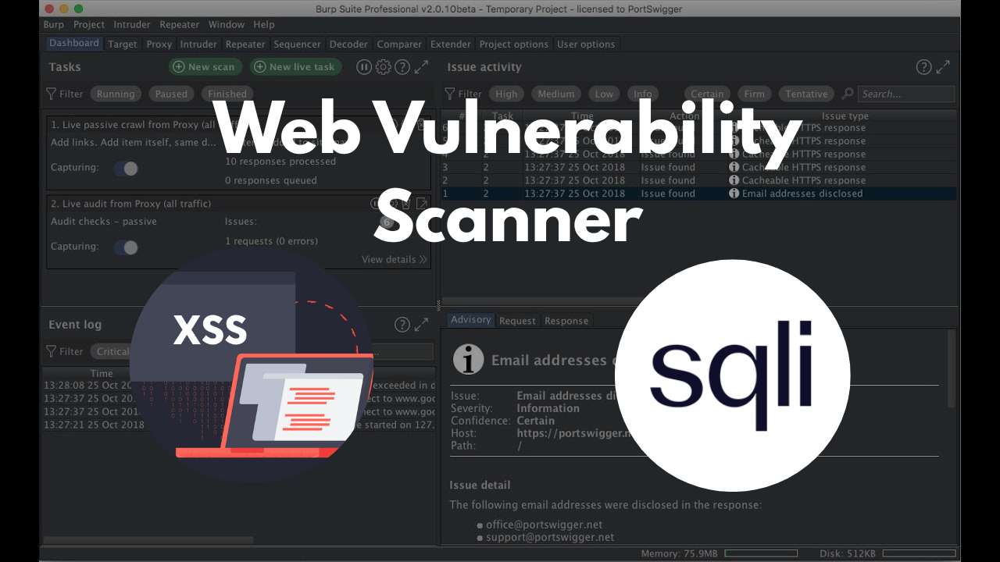

Red Inject
View

A tool that automates the scanning of webpages to detect and analyze HTML forms, identifying potential XSS and SQL injection vulnerabilities through intelligent crawling, input field enumeration, and pattern-based payload analysis — streamlining the process of web application security testing, reducing manual effort, and assisting developers or security analysts in uncovering common attack vectors across dynamic or static web pages.
Python
Shell